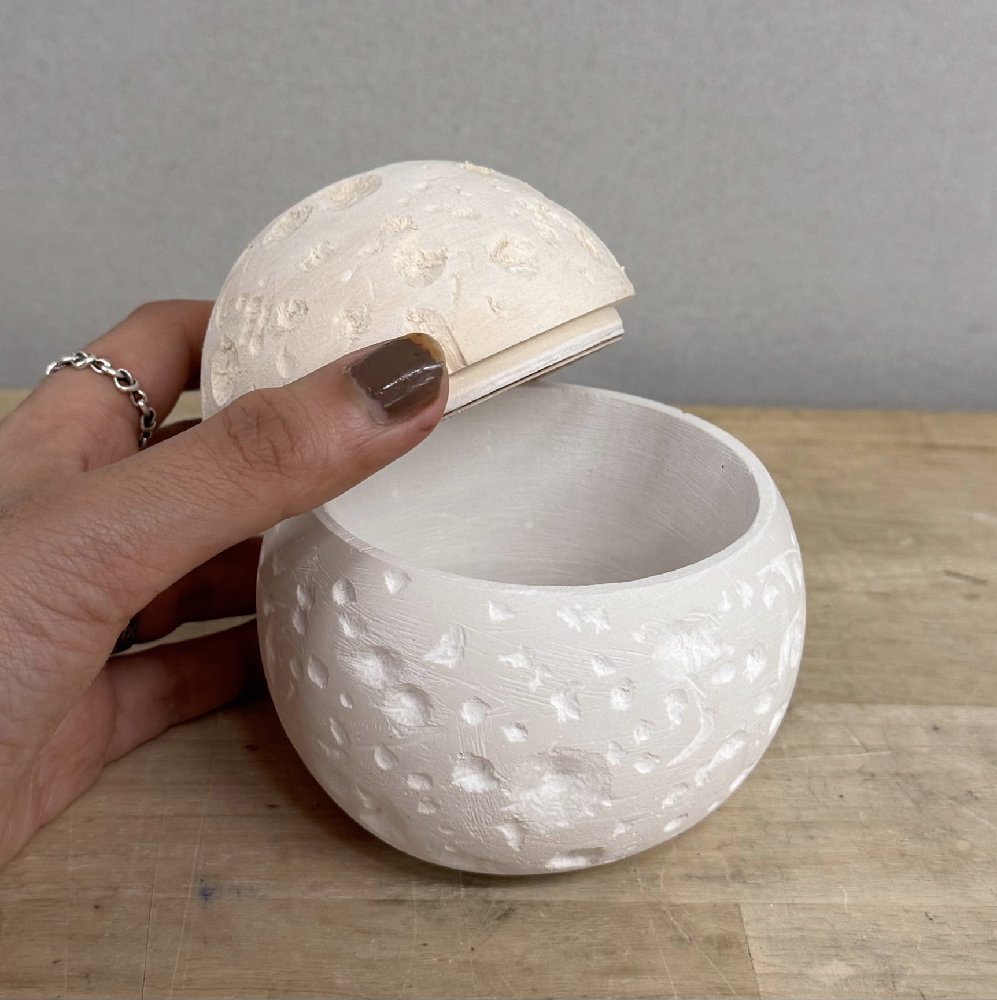

Experimental Media
Lunar Vessel



Inspired by the moon’s cratered surface, this sculptural lidded container explores the intersection of form, function, and materiality. The piece consists of a wooden lid and a plaster container, each designed to seamlessly blend into the spherical shape while maintaining an organic, tactile quality. The textured surface, mimicking lunar craters, invites interaction, encouraging the viewer to engage both visually and physically.
Idea Development